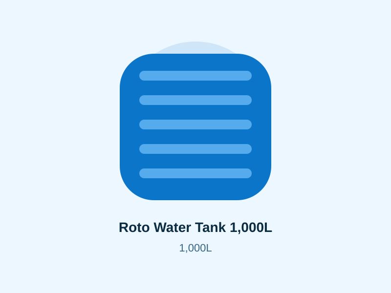

Verified specification guide
Roto Water Tank 2,000L
Small household, rental unit or light business backup. Compare the published dimensions, full-load implications, installation needs and delivery access before requesting a current quotation.
Specification-led buying guide
KSh 10,500 indicative tank price
This 2,000-litre vertical tank is commonly considered for small households, rental compounds and shops with moderate demand. The price shown is the site catalogue reference, not a guaranteed checkout price.
- Price record checked: 22 August 2026
- Published physical envelope included below
- Full-load and access planning included
- Final stock, variant and warranty require written confirmation
2,000L tank specifications
Specification status: capacity and dimensions are taken from a published Roto Moulders price-list document; material, UV and potable-water statements are from the current manufacturer FAQ. Where the manufacturer does not publish a model-specific value, this page says so instead of estimating it.
- Exact nominal capacity
- 2,000 litres
- Diameter and height
- 134 cm diameter × 146 cm high
- Empty tank weight
- Not published in the current referenced manufacturer material. Request the model data sheet before structural or lifting calculations.
- Approximate full water load
- 2,000 kg of water, plus tank, fittings and platform loads
- Outlet size
- Not published for this exact variant. Specify the required connection and obtain written confirmation before plumbing work.
- Lid diameter
- Not published for this exact variant. Confirm the dispatched model before planning access or maintenance equipment.
- Base planning dimensions
- No smaller than the complete tank footprint; allow about 154 × 154 cm as a handling footprint. Structural design remains site-specific.
- Material
- Food-grade polyethylene; manufacturer states BPA-free construction
- UV protection
- UV-stabilized for outdoor weather exposure
- Potable-water suitability
- Manufacturer states suitable for potable-water storage
- Available colours
- Manufacturer currently shows beige, black, blue, brown, yellow, dark green, grey, green, orange, purple, red and white options; confirm the colour stocked for this capacity.
- Warranty information
- No model-specific term is published in the referenced FAQ. Obtain the written manufacturer or seller warranty, exclusions and claim process before payment.
- Installation requirement
- Above-ground, upright installation on a smooth, level, continuous, load-rated base; support pipework independently and provide a controlled overflow.
- Delivery requirement
- Confirm clear route width, height restrictions, turning room, offloading crew or equipment, exact map pin and final placement before dispatch.
- Last price record update
- 22 August 2026
Specification references: Roto Moulders material and potable-water FAQ and published Roto Moulders dimensions list. Confirm the current manufactured variant before ordering because specifications can change.
Installation and access planning
A full 2,000L tank places at least 2,000 kg of water on its support. Ground-level concrete bases, elevated slabs and steel towers have different design requirements. Do not use blocks, narrow beams or a platform that leaves part of the base unsupported. If the tank will be elevated, ask a qualified structural professional to account for the tank, water, wind, maintenance access and local site conditions.
For delivery, measure the narrowest point rather than only the final tank location. Check the gate, driveway bends, balconies, roof eaves, overhead service cables and soft ground. Large capacities may need extra handlers or lifting equipment. Plumbing and placement should be agreed separately so the delivery vehicle is not expected to perform unquoted installation work.
Related tank sizes
Questions about the 2,000L tank
For five people using roughly 50–100 litres each per day, this capacity represents about 4–8 days of stored water. Actual duration changes with laundry, flushing, irrigation, leaks and whether the tank is refilled during that period.
The published tank envelope is 134 cm diameter × 146 cm high. Allow at least 20 cm additional handling clearance around the widest point and confirm the exact dispatched variant before constructing a base or gate opening.
Do not assume it will. The widest listed version is about 134 cm across before handling clearance. Measure the complete route, including the gate, eaves, cables, trees and turning space, then send those measurements with the delivery enquiry.
The water alone weighs approximately 2,000 kg (2 tonnes). Add the unpublished empty-tank weight, fittings and any platform loads when the support is designed.
Use a level, smooth, continuous and structurally adequate base that supports the entire tank footprint without overhang. A practical planning footprint is at least 154 × 154 cm, but an engineer must size elevated slabs or towers for the full load and local conditions.
Roto Moulders states that its water tanks use food-grade, BPA-free, UV-stabilized polyethylene suitable for potable-water storage. Keep the tank closed and maintain the inlet, overflow and cleaning schedule to protect water quality.
Delivery is quoted separately because distance, tank width, vehicle access, offloading labour and any lifting equipment affect the cost. Send the exact town, a map pin and access notes for a useful quotation.
No installation inclusion is assumed. Confirm in writing whether placement, fittings, plumbing, a pump, base work, offloading or lifting equipment are included in the quotation.
Confirm the exact tank before paying
Send your delivery town, preferred colour and access measurements. Ask for the current price, dispatched dimensions, fittings, warranty and delivery terms in one written quotation.
Get the complete quotation